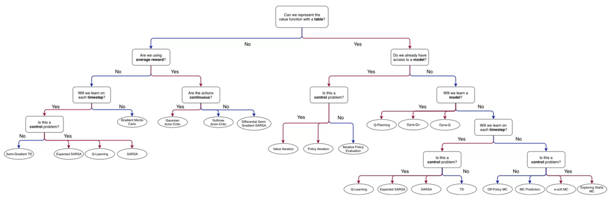
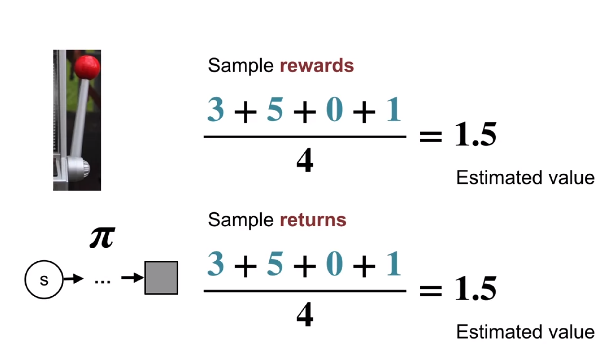
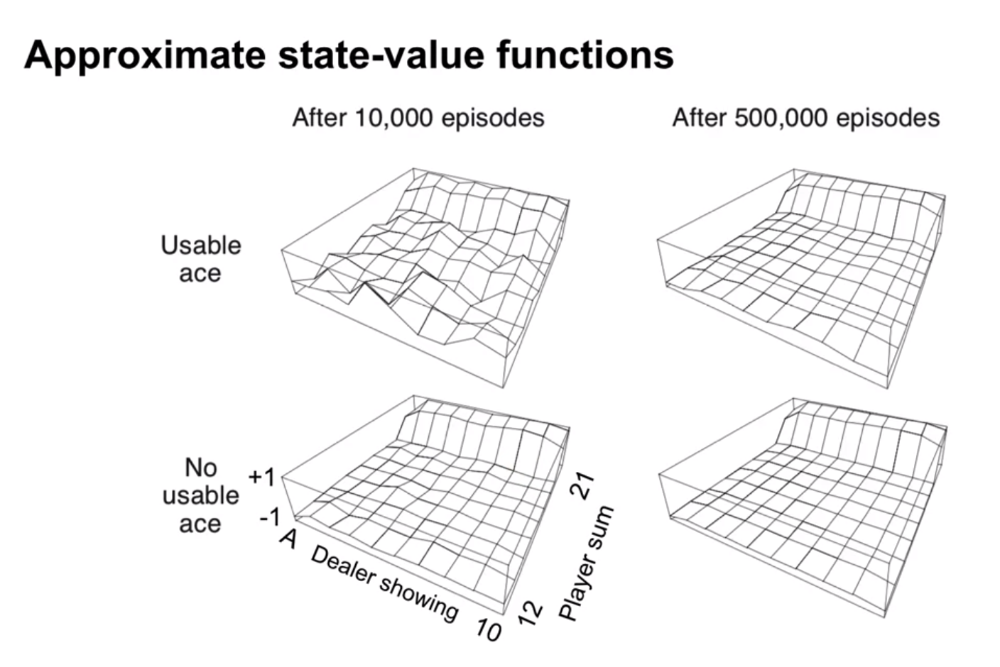
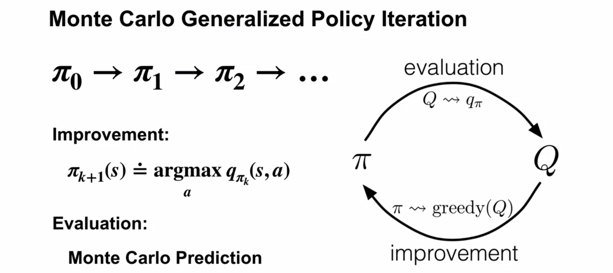
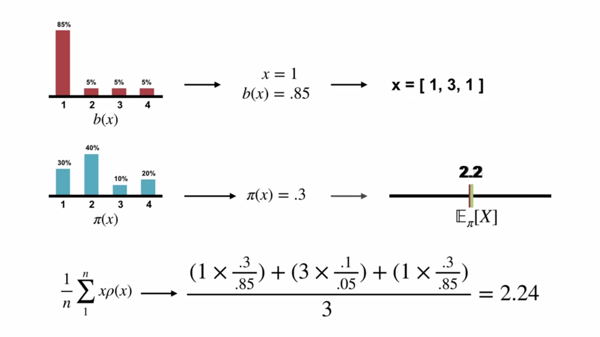

- In this module we will embrace the paradigm of “learning from experience”.
- This is called Sample based Reinforcement Learning and it we will let us relax some strong of the requirements of dynamic programming, namely knowing the table of MDP dynamics.
- We will first use efficient Monte-Carlo ‚öÖüÉÅ methods for üîÆ prediction problem of estimating \(v_\pi(S)\) value functions and action‚Äìvalue functions \(q_\pi(a)\) from sampled episodes.
- We will revise our algorithm to better handle exploration using exploring starts and \(\epsilon\)–soft policies.
- We will adapt GPI algorithms for use with Mote-Carlo to solve the üéÆ control problem of policy improvement.
- With off policy learning learn a policy using samples from another policy, by corrected using importance sampling.


Here are most of the definitions we need for this module. Let us review them before we start.
- Value Function \(v_\pi(s)\)
-
a state’s value is its expected return
-
\(v_\pi(s) \doteq \mathbb{E}[G_t|S_t=s]\)
- Action Value Function
-
is the expected return for taking action \(a\) in state \(s\) if we follow policy \(\pi\)
-
\(q_\pi(a) \doteq \mathbb{E}[G_t \vert A_t=a] \space \forall a \in \{a_1 ... a_k\}\)
- Bootstrapping
-
“learning by guessing from a guess” or more formally
-
the process of updating an estimate of the value or action-value function based on other estimated values. It involves using the current estimate of the value function to update and improve the estimate itself.
- Control
-
to approximate optimal policies using the DP approach of GPI
- ϵ-Soft Policy
-
A policy in which each possible action is assigned at least \(\epsilon / |A|\) probability.
- Exploring Starts
-
Learning the value or action values of a policy by trying each action starting in each state at least once and then following the policy.
-
This can include taking actions that are not part of the policy.
- Monte-Carlo Methods
-
Estimation methods which relies on repeated random sampling. Also see Monte-Carlo methods
- On-policy learning
-
learning a policy \(\pi\) by sampling from \(\pi\)
- Off-policy learning
-
learning a policy \(\pi\) by sampling from some other policy \(\pi'\)
- Prediction
-
Estimating \(v_\pi(s)\) is called policy evaluation in the DP literature.
We also refer to it as the Prediction problem 1
- Return (\(G_t\))
-
\(G_0 \doteq R_1+ \gamma^1 R_2 + \cdots+ \gamma^n R_n\)
i.e. the discounted sum of future rewards
- Tabular methods
-
RL methods for which the action-values can be represented by a table
- Sample based methods learning from experience, without having prior knowledge of the underlying MDP model.
- We will cover tabular methods in which the action-values can be represented by a table.
Lesson 1: Introduction to Monte-Carlo Methods
- After completing the introduction we all think that MDPs and DP are the best?
- Alas, Martha burst this bubble, introducing some shortcomings of DP, namely they require us to know a model of the dynamics \(p(s,a|s',r)\) and rewards \(r\) of the MDP to estimate \(v(s)\) or \(q(a)\).
let us now try to understand how Monte-Carlo can be used to estimate \(v(s)\) value functions from sampled interaction.
Example 1 (Rolling 12 Dice)
- Say our MDP requires rolling 12 dice.
- this is probably intractable to estimate theoretically using DP.
- this is likely to be error prone (particularly and constitutionally).
- this will be easy to estimate using MC methods
- For most MDPs knowing the dynamics and rewards is an unreasonably strong requirement.
- If we can treat this like a bandit problem we can try to use the long term averages rewards to estimate value of a state

more formally we can use the MC value prediction algorithm.
Next we present an algorithm for estimating the value function of a policy \(\pi\) using MC methods.
The book uses presents a small variation called the first visit MC method, We considered the any-visit case. This estimates \(v_\pi(s)\) using the average of the returns following an episode’s first visit to \(s\), whereas this the every-visit MC algorithms averages the returns following all visits to \(s\)
The main idea is to use the recursive nature of the returns which is embodied in the following formula:
\[ NewEstimate \leftarrow OldEstimate + StepSize[Target - OldEstimate] \qquad \text{(incremental update rule)} \tag{1}\]
The key to understanding this algorithm is represented in the following diagram. At the top is a backup diagram for an discounted episode.
Martha explain that the MC uses the recursive nature of the returns to efficiently compute the average returns for each state by starting at the end of the episode and working backwards.
We can see that the returns from a series of equations that can be solved by substitution. Each return is the current reward and the discounted previous return that has been computed.
Thus we can compute all the returns for a state in a single pass through the episode. by solving this series of the full “telescoping” equations.
this bring us to our second example:
Example 2 (Blackjack MDP)
- Undiscounted MDP where each game of blackjack corresponds to an episode with
In the programming assignment we will produce the following graphs

- In real world settings we typical don’t know theoretical functions like values, action values or rewards. Out best option is to sample reality in trial and error experiment of testing different interventions.
- However under certain conditions such samples may be enough to perform the prediction task learn a value function or the action value function .
- We can these function to learn better policies from this experience.
- A second scenario involves historical samples collected from past interactions. We can use probabilistic methods like MCMC to estimate \(q(a)\).
we can use the MC prediction alg to estimate the expected returns for a state given a policy \(\pi\)
The key limitations of MC value estimation algorithm is its requirement for episodic tasks and for completing such an episode before it starts. In some games an episode can be very long.
- If we work in the Bayesian paradigm with some prior and use Bayesian updating.
- At every step we should have well defined means.
- So it seems one can perhaps do sample based on non-episodic tasks
- One more idea is to treat n_steps as an episode.
- Without episodic we most likely lose the efficient updating. :thinking:
- Perhaps we can use the online update rule for the mean.
To ensure well-defined average sample returns, we define Monte Carlo methods only on episodic tasks that all eventually terminate - only on termination are value estimates and policies updated.
Implications of MC Learning
- We don’t need to keep a large mode of the environment.
- We estimate the values of each state independently of other states
- Computation for updating values or each state is independent of the size of the MDP5
Lesson 2: Monte Carlo for Control
MC Action-Value Functions
This back off diagram indicates that the value of a state S depends on the values of its actions.
- Recall that control is simply improving a policy using our action values estimate.
- Policy improvement is done by Greedyfying a policy \(\pi\) at a state \(s\) by selecting the action \(a\) with the highest action value.
- If we are missing some action values we can make the policy worse!
- We need to ensure that our RL algorithm engages the different actions of a state. There are two strategies:
- Exploring starts
- \(\epsilon\)-Soft strategies
The following is the MC alg with exploring start for estimation.

Let’s recap how GPI looks:
- Keeping \(\pi_0\) fixed we do evaluation of \(q_\pi\) using MC–ES
- We improve \(\pi_0\) by picking the actions with the highest values
- We stop when we don’t improve \(\pi\)
Here, in the evaluation step, we estimate the action-values using MC prediction, with exploration driven by exploring Starts or an \(\epsilon\)-soft policy
Lesson 3: Exploration Methods for Monte Carlo
Next we look into using exploring starts to learn action values using MC sampling.
Recall that we like action values over state values since they allow us to find optimal policies by quickly picking the best action in a state.
Mr White explains that we can’t use a deterministic policy to learn action values since we need to explore multiple actions in a state to pick the best one. To do this with a deterministic policy we use exploring starts - this means we start each simulation with a random state and action then follow the policy. This should eventually allow us to learn the action values for all actions in all states.
So here is how can use exploring starts or some other exploration strategy to ensure that we can learn the action values for all actions in all states.
Adam White points out how this is so much simpler than the DP methods we learned earlier. We don’t need to solve a set of simultaneous equations. We can just use the MC method to estimate the action values and then use GPI to improve the policy. The only thing we need to do is to ensure that we explore all the actions in all the states.
Challenges for exploring starts
Exploring start can be problematic as we may not able to say try all actions on all states.
- there may be too many states actions to try
- testing certain actions in certain states it could be unethical 6 or risky 7
- it could cost too much - we need too many experiments.
Note: The Blackjack MDP can be improved using Exploring Starts since each initial state can be sampled. Recall there were 200 states.
ϵ-Soft Policies
AN ALTERNATIVE approach to policy improvement is an generalization of both the \(\epsilon\)- greedy policy and the random uniform, which we first learned in the contexts of the multi-armed bandits problem in the fundamentals course.
- ϵ-soft policy
-
An ϵ-soft policy is one for which in each state, all actions have a probability of at least \(\frac{\epsilon}{|A|}\)
The advantages of using an \(\epsilon\)-soft policy are: - we get a never ending exploration
However this means we can never reach a deterministic optimal policy - but we can get to a stochastic policy where the best choice is \(1-\epsilon+\frac{\epsilon}{|A|}\)
We can get to a deterministic policy if we use a decaying \(\epsilon\)-greedy policy or if we greedify the policy breaking ties randomly.
The Highlights indicate modification of the Exploring Starts alg
- We can start with Uniform-random as its epsilon-soft.
- Episode generation uses the current \(\pi\) (\(\epsilon\)-soft policy) before it is improved.
- We drop the first-visit check - this is an every-visit MC algorithm.
- The new policy generated in each iteration is \(\epsilon\)-greedy w.r.t. the current action-value estimate, which is improved prior.
- The optimal \(\epsilon\)-soft policy is an \(\epsilon\)-soft policy.
Lesson 4: Off-policy learning for prediction
Off-policy learning
- Off-policy learning is a way to learn a policy \(\pi\) using samples from another policy \(\pi'\).
- This is useful when we have a policy that is easier to sample from than the policy we want to learn.
- A key idea is to correct the returns using importance sampling.
For example suppose we can use a rule based model to generate samples of agent state, action and rewards - but we don’t really have an MDP, value function or policy. We could start with a uniform random policy and then use the samples to learn a better policy. However this would require us to interact with the environment and our agents may not be able to do this. In the case of Sugarscape model the agents are not really making decisions, they are following rules.
If we wished to develop agent that learn using RL with different rules on or off and other settings and use those to learn a policy using many samples. One advantage of the Sugarscape model is that it is highly heterogeneous so we get a rich set of samples to work with. A second advantage is that the rule based model can be fast to sample from and we can generate many samples by running it using hyper-parameters optimized test-bed.
So if we have lots of samples we may not need to explore as much initially, but rather learn to exploit the samples we have. Once we learn a near optimal policy for the samples we can use our agent to explore new vistas in our environment.
Target and behavior policies
- The target policy is the policy we want to learn.
- The behavior policy is the policy we sample from.
Importance sampling
- Importance sampling is a technique to estimate the expected value of a target distribution using samples from a different distribution.
- Why cant we just use the samples from the behavior policy to estimate the target policy?
- The answer is that the samples from the behavior policy are biased towards the behavior policy.
- In the target policy we may have states that are never visited by the behavior policy.
- For example we might want to learn a policy that focuses on trade rather than combat or Vica-versa. This extreme idea of introducing/eliminating some action would significantly change behavioral trajectories. Sample based methods could be able to handle these changes - if we can restrict them to each subset of actions but clearly the expected return of states will be diverge in the long run.
- So what we want is someway to correct the returns from the behavior policy to the target policy.
- It is used to correct returns from the behavior policy to the target policy.
The probability of a trajectory under \(\pi\) is:
\[ \begin{align*} P(A_t, S_{t+1}, & A_{t+1}, ... ,S_T | S_t, A_{t:T-1} \sim \pi) \newline & = \pi(A_t|S_t)p(S_{t+1}|S_t, A_t)\pi(A_{t+1}, S_{t+1}) \cdot\cdot\cdot p(S_T|S_{T-1}, A_{T-1}) \newline & = \prod_{k=t}^{T-1} \pi(A_k|S_k)p(S_{k+1}|S_k, A_k) \end{align*} \tag{2}\]
Importance sampling ratio
Definition: The importance sampling ratio (rho, \(\rho\)) is the relative probability of the trajectory under the target vs behavior policy:
\[ \begin{align} \rho_{t:T-1} & \doteq \frac{\prod_{k=t}^{T-1} \pi(A_k \mid S_k) \cancel{ p(S_{k+1} \mid S_k, A_k)}}{\prod_{k=t}^{T-1} b(A_k \mid S_k) \cancel{ p(S_{k+1} \mid S_k, A_k)} } \newline & = \prod_{k=t}^{T-1} \frac{\pi(A_k \mid S_k)}{b(A_k \mid S_k)} \end{align} \tag{3}\]
\[ v_\pi(s) = \mathbb{E}_b[\rho_{t:T-1} \cdot G_t \mid S_t = s] \qquad \tag{4}\]
\[ V(s) \doteq \frac{\displaystyle \sum_{t\in \mathscr T(s)}\rho_{t:T(t) - 1} \cdot G_t}{|\mathscr T (s)|} \qquad \tag{5}\]
\[ V(s) \doteq \frac{\displaystyle \sum_{t\in \mathscr T(s)} \Big(\rho_{t:T(t) - 1} \cdot G_t\Big)}{\displaystyle \sum_{t\in \mathscr T(s)}\rho_{t:T(t) - 1}} \qquad \tag{6}\]

Emma Brunskill: Batch Reinforcement Learning
These guest talks have a dual purpose:
- to let the speakers share their passion for the field and introduce us to their research. this can be a good start for reading more about our own interests or for looking how to solve real problems that we are facing.
- to show us how the concepts we are learning are being used in the real world.
- Emma Brunskill is a professor at Stanford University.
- Burnskill motivated her approach with an edutainment app in which the goal is to maximize student engagement in game based on historical data.
- In batch RL we have a fixed dataset of samples and we want to learn a policy from this data.
- This is useful when we have a fixed dataset of samples and we want to learn a policy from this data.
- The key idea is to use importance sampling to correct the returns from the behavior policy to the target policy. We learned that the challenge this poses is primarily due to the bias of the behavior policy.
- Importance sampling provides us with an unbiased estimate of the value function yet can have high variance. These may can be exponentially large in the number of steps. So these results in very poor estimates for the value function if there are many steps in the trajectory.
- Brunskill suggest that the real challenge posed by batch RL is a sparsity of trajectories with actions leading to optimal next states under the target policy in the historical data.8
- One point we learned about this is that we should seek algorithms that are more data efficient. However
- A send idea is to use parametric models which are biased by can learn the transition dynamics and the reward function more efficiently.
- Brunskill points out that since we have few samples we may need a better approach to get robust estimates of the value function.
- This approach which comes from statistic is called doubly robust stimators and has been used in bandits and RL
- She presents a chart from a 2019 paper with a comparison of different methods for RL in the cart-pole environment.
- Off policy policy gradient with state Distribution Correction - dominates the other methods. And has a significantly narrower confidence interval for the value, if I understand the figure correctly.
- She also presents results from many papers on Generalization Guarantees for RL, which show that we can learn a policy that is close to the optimal policy with a small number of samples from another policy. However I cannot make much sense of the result in the slide.
- An example of this is the Sugarscape model where we have a fixed dataset of samples from the rule-based model.
- More generally, we can use batch RL to learn from historical data how to make better decisions in the future.
- Counterfactual
-
You don’t know what your life would be like if you weren’t reading this right now.
- Causal reasoning based on counterfactuals is a key idea to tackling this problem.
- Counterfactual or Batch Reinforcement Learning
-
In batch RL we have a fixed dataset of samples and we want to learn a new policy from this data.
Doubly robust estimators is a technique from statistics that and causal inference that allows us to combine to do importance sampling and model based learning and a propensity score to estimate the value function. combine the best of both worlds - they are robust to errors in the model and the policy.
\[ \hat V_{DR} =\frac{1}{N} \sum_{i=1}^N \left[ \rho_i (R_i + \gamma Q(s_{i+1}, \pi(s_{i+1}))) - \rho_i \hat Q_{\pi}(s_i, a_i) + \hat Q_{\pi}(s_i, a_i) \right] \] where:
- \(\rho_i\) is the importance sampling ratio for the \(i\)-th sample
- \(R_i\) is the reward - \(Q(s_{i+1}, \pi(s_{i+1}))\) is the value of the next state under the target policy
- \(\hat Q_{\pi}(s_i, a_i)\) is the model based Q-function estimate
- \(Q(s_{i+1}, \pi(s_{i+1}))\) is the value of the next state under the target policy
and paper
Footnotes
Prediction in the sense that we want to predict for \(\pi\) how well it will preforms i.e. its expected returns for a state↩︎
worth either 1 or 11↩︎
face card are worth 10↩︎
this is a big simplifying assumption↩︎
in DP we had to solve \(n\times n\) - simultaneous equations↩︎
think of a medical trial↩︎
think of a self driving car↩︎
- Can we learn form one or two examples by sampling ?
- what if the good actions are never sampled by our algorithm?